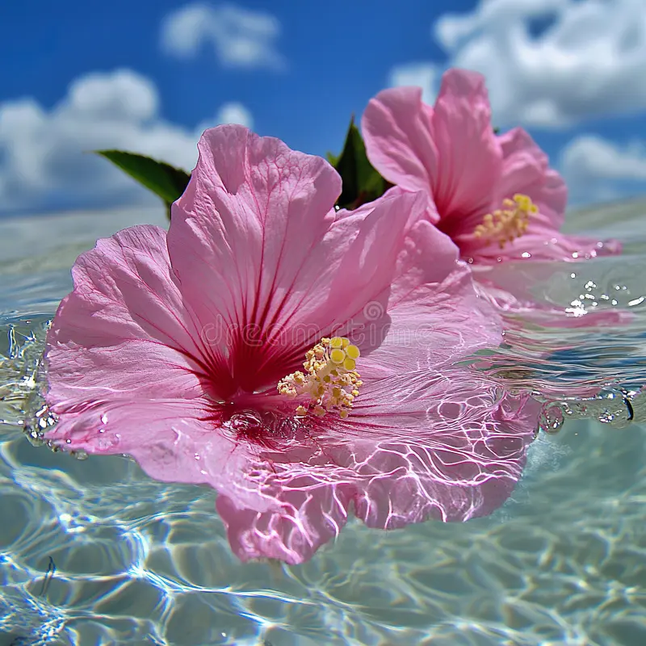
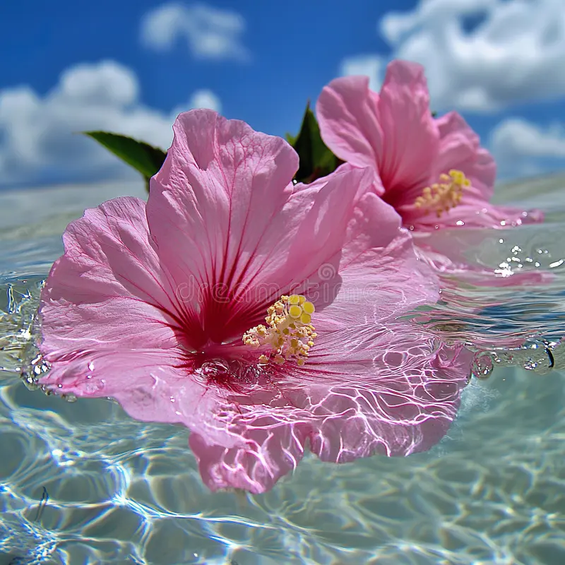

Flowers: Nature’s Color Flowers are one of nature’s most beautiful creations, adding color, fragrance, and life to the world. They come in many shapes and sizes, from the delicate petals of a rose to the bold blooms of a sunflower. Flowers serve important roles in nature, attracting pollinators like bees and butterflies, which help plants reproduce. Some flowers, such as the lotus and the cherry blossom, hold deep cultural and symbolic meanings in different societies. Additionally, flowers are used for decoration, medicine, and even in perfumes. Whether growing in gardens, fields, or forests, flowers bring joy and beauty to people everywhere.


 
